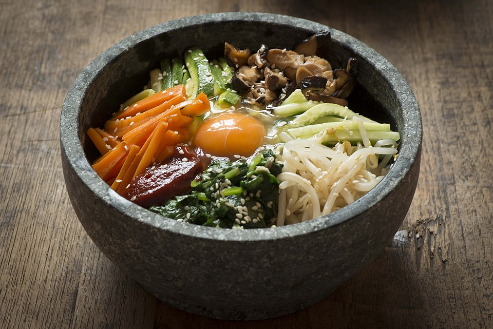

Home
Bibimbap

This bibimbap recipe makes a popular and delicious Korean meal of warm white rice topped with vegetables, beef, a fried egg, and spicy gochujang chili paste.
Traditionally, bibimbap was eaten on the eve of the Lunar New Year, to use up any leftovers before the start of the new year.
Ingredients
- Cucumbers
- Vegetables
- Soy sauce
- Olive oil
- Steak
- Egss
- Rice
- Sesame oil
- Sesame seeds
Steps
- Stir the cucumber pieces and gochujang together in a bowl.
- Cook the spinach until bright green and wilted.
- Drain the spinach, squeeze out as much moisture as possible, and set aside.
- Cook the carrots until soft, then stir in the cucumber mixture and red pepper flakes.
- Brown the beef in a different skillet and set aside.
- Fry the eggs until the yolks are runny, but whites are firm.
- op each serving of rice with the spinach mixture, beef, and the cucumber mixture.
- Place an egg atop each serving, then drizzle with sesame oil, sesame seeds, and gochujang (if desired).